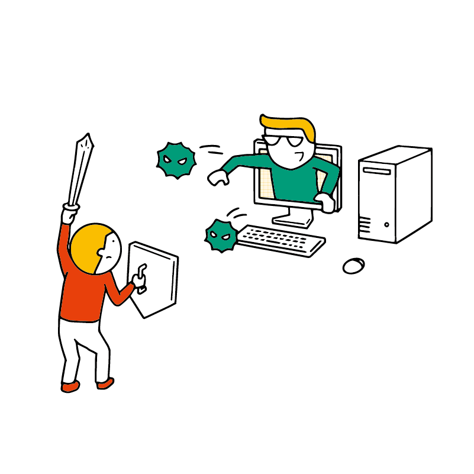
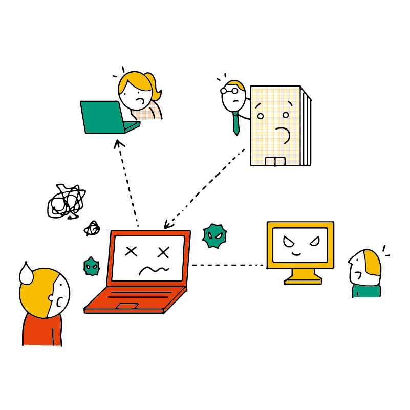
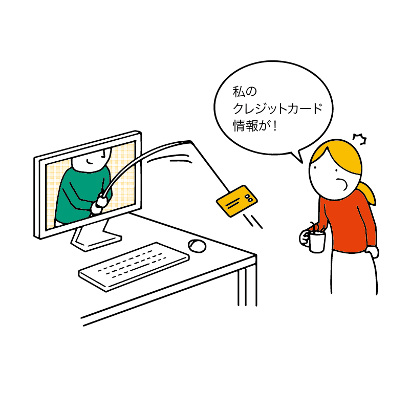
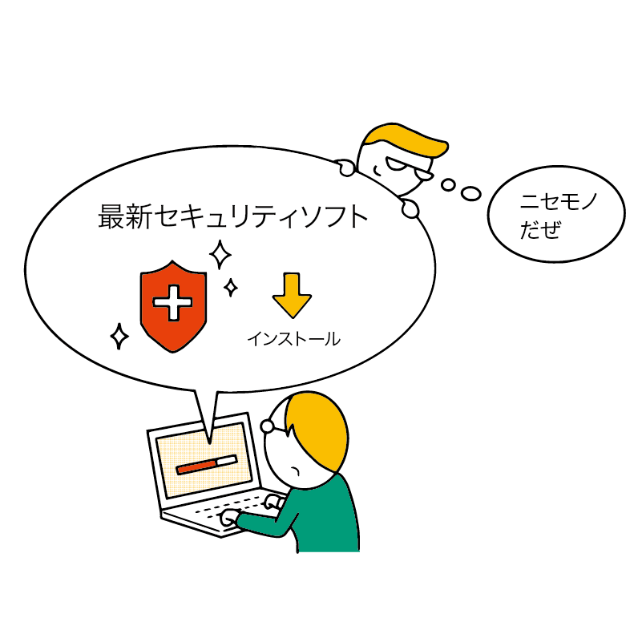

セキュリティについて知ろう
セキュリティ（security）とは、「安全」や「防犯」などを意味する英単語です。パソコンにおいては、ウイルス対策や個人情報の流出防止といった「コンピューターセキュリティ」のことを指します。
セキュリティを学んで守るべきもの
あなた自身とあなたの情報
まず第一に、あなた自身を守る必要があります。プライバシーのためはもちろん、あなたの情報を利用して犯罪が行われるのを防ぐ目的もあります。
どんな情報を公表したいか、したくないかは人によって違うでしょう。例えばネット上に本名や学校を公開しても大丈夫という人もいれば、何も公開したくないという人もいるでしょう。
ただし、以下のものについては誰であっても、どんな理由があったとしても、他者に知られないように気をつけましょう。
- パスワード
- クレジットカード・デビットカードの番号
- 銀行口座の番号（通帳・キャッシュカード）
- マイナンバー
また、以下のものは状況によっては他の人に伝えることがあるかもしれませんが、一般公開すると危険なことがあります。慎重に扱いましょう。
- 住所
- パスワードの再発行に使える情報
- 生年月日
- 携帯電話番号
- 「秘密の質問」の答えになっている情報
あなたのパソコンとファイル
あなた自身を守るだけでなく、あなたのパソコンやファイルを守りましょう。
- パソコンが故障して利用できなくなる
- ファイルが削除されたり、他人に流出したりする
あなたの友人や家族、同僚、勤務先など
現実のウイルスに誰か 1 人が感染すると、同じ学校や職場で「集団感染」が発生してしまうことがあるのと同様に、コンピューターウイルスはネットワーク上に接続されているパソコンや連絡先などを手当り次第に攻撃し、さらに「感染」を拡大する性質を持っています。また、SNSなどのアカウントが乗っ取られた場合も、同様に「友達」や「フォロワー」のリストを使って手当り次第に拡大していくことがあります。
そのため、あなたのパソコンやアカウントが被害に遭ったとき、気付かないうちに周りの人にも被害が広がっている可能性があります。
特に会社のパソコンであれば、社内のどれか 1 台に侵入できれば、あとは社内ネットワークを経由して、攻撃者が組織内のパソコンすべてを自由に操れてしまうケースもあります。
そうなると、会社全体の業務が停止したり、社員や顧客の個人情報が流出したりといった大問題になる恐れがあります。
時々、「会社から個人情報が流出した」といったニュースが世間を騒がせることがありますが、その多くはたった 1 台のパソコンに侵入されてしまう事から始まっているのです。
そのため、「自分には関係ない」と思うのではなく、会社や学校の全員がセキュリティに対する意識を持つ必要があります。
パソコンにとっての「防犯」とは？
私たちが普段生活している上での「防犯」といえば「犯罪行為から身を守ること」で、例えば空き巣対策やひったくり対策などが挙げられるでしょう。
では、パソコンにとってのセキュリティ（防犯）ではどういった犯罪から身を守ればよいのでしょうか？
マルウェア（ウイルスなど）
マルウェアとは、犯罪者などによって作られた不正なソフトウェアの総称です。マルウェアは英語で「悪意あるソフトウェア」を意味する造語です。
一般的には、ウイルス（コンピューターウイルス）と呼ばれるものですが、正確には「ウイルス」はマルウェアの一種です。
なお、コンピューターウイルスは、実際のウイルスのように「感染して広がっていく」様子から名付けられたものであり、現実世界で人間や動物に感染するウイルスとは別モノです。
詐欺
ネットを悪用した詐欺（オンライン詐欺）も数多く存在します。
フィッシング詐欺
フィッシング詐欺とは、偽物のログインページを送りつけてパスワードなどを奪い取るものです。
例えば、銀行のログインページとそっくりの偽Webサイトをメールで送信し、ID・パスワードを入力させるものが有名です。
これに引っかかってしまうと、あなたのアカウントが犯人に奪われてしまい、金銭的な被害を受けてしまいます。
偽のセキュリティソフトによる詐欺
Webサイトなどで「あなたのパソコンやスマホはウイルスに感染しています」「あなたのパソコンのシステムが壊れています」という嘘の警告メッセージを表示した上で、偽のセキュリティソフトや修復ツールをダウンロードするように誘導するものです。
実は偽のセキュリティソフト自体がマルウェア（ウイルス）の一種であり、これをインストールしてしまうことで本当にパソコンが壊れてしまいます。 また、偽のセキュリティソフトは自分でパソコンを壊しておきながら、「修復するには有料版を購入してください」というように金銭を要求します。
ほかにも「サポートセンター」と称した電話番号を示し、電話をかけると偽のスタッフがパソコンを遠隔操作して同様の被害をもたらす場合もあります。
こういった詐欺では、詐欺師は被害者からお金を奪い取るのが目的です。そのため、言われるとおりに「代金」を支払ったとしてもパソコンは元通りにならないほか、クレジットカード番号などがさらに悪用されるリスクがあります。
アカウントや個人情報の流出
個人情報が流出すると、あなたのプライバシーが侵害されてしまうだけではなく、上記のような詐欺などのターゲットとなってしまう可能性があります。
また、クレジットカード番号が流出すると金銭的被害を受ける可能性もありますし、SNSなどのアカウントが流出すると「なりすまし」被害を受けたりメッセージが流出したりするなど、周囲の人にも迷惑が掛かる恐れがあります。
マルウェアの侵入経路
ここまで見てきたように。マルウェアは非常に恐ろしいものです。
どのような経路でパソコンに侵入するのでしょうか。大きく分けて 2 種類の方法あります。
アプリのバグを利用する
OSやブラウザ、様々なアプリには様々なバグが存在している可能性があります。バグの中には「本来は出来てはいけないことが出来てしまう」といった悪用可能なものも存在します。
これを脆弱性（ぜいじゃくせい）といいます。
仮にブラウザに脆弱性があった場合、Webページを開いただけで、本来は出来ない操作（Webページがパソコンを乗っ取るなど）が出来てしまう恐れがあります。
これらの脆弱性は他のバグと同様に修正されるので、アプリは常に最新版にアップデート（更新）しましょう。
人をだます
近年はパソコンのセキュリティ機能が向上してきたこともあり、アプリの脆弱性だけを狙ってマルウェアが侵入する事は難しくなりつつあります。
そこで、パソコンの利用者をだまして、利用者自らの操作でマルウェアを実行・インストールするように仕向ける事例が増加しています。
先ほど説明したオンライン詐欺の「偽のセキュリティソフト」もその一例です。
また、実際に存在する正規のアプリを装った偽サイトを作り、そこに利用者を誘導してマルウェアをダウンロードさせる事例もあります。
例えば「有料アプリが無料で使える」といった宣伝がなされている場合、こういった偽サイトの可能性があります。
さらに、企業を狙ったものでは 標的型攻撃 も増加しています。
フィッシング詐欺は同じ内容の詐欺メールを不特定多数の人に送信するものですが、標的型攻撃では特定の相手（標的）の取引先や同僚などになりすまし、添付したファイル（実体はマルウェア）を開くように促すメールを自然な流れで送りつける巧妙な手法をとります。
普通の詐欺には騙されないような人でも引っかかってしまうことがある、恐ろしい手法です。
セキュリティについて学ぶ
この章では、こういった攻撃からあなたや周囲の人の身を守るための知識を学びます。